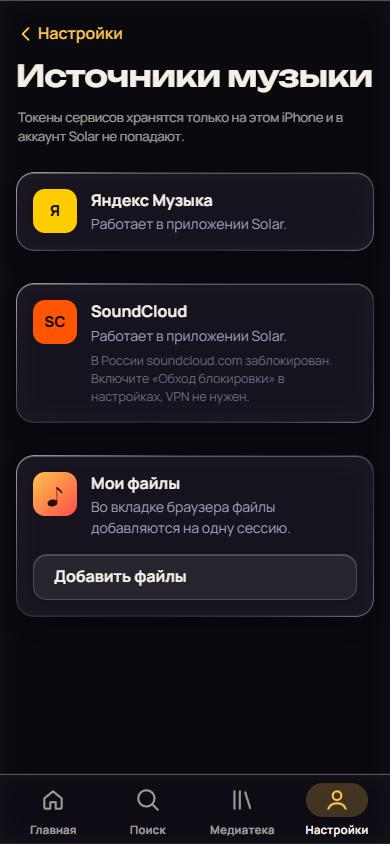
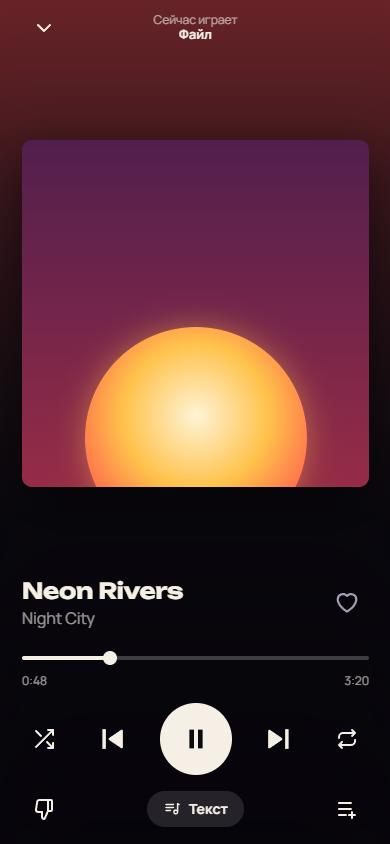
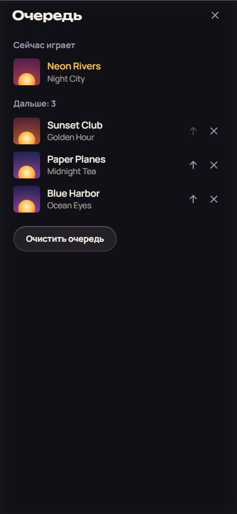
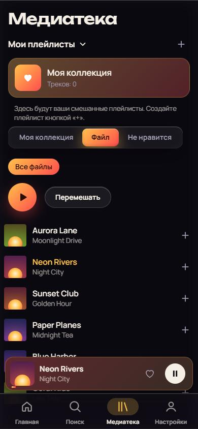
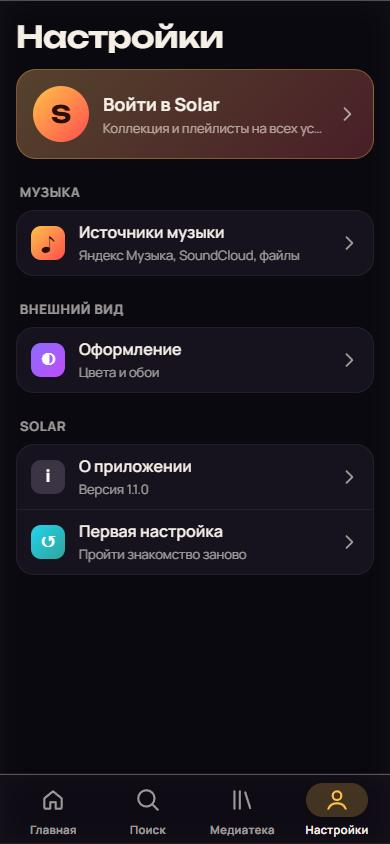

Что умеет Solar
Один плеер для всех сервисов, где у вас есть аккаунт. Всё, что ниже, есть в версии 1.5.0; различия между ПК и iPhone отмечены отдельно.
Один поиск
Ищет сразу во всех подключённых сервисах. Одинаковые треки из разных сервисов склеиваются в один.
Общая очередь
Трек из Яндекса, за ним SoundCloud, потом файл с диска. Недоступные треки плеер пропускает сам.
Единая коллекция
Лайки из всех сервисов в одном месте, смешанные плейлисты из разных источников, список дизлайков.
Солнечная волна
Поток музыки по вашему вкусу с выбором настроения, а ещё волна от любого выбранного трека.
Тексты и караоке
Слова подсвечиваются ровно тогда, когда их поют. Тексты из нескольких источников, Solar выбирает лучший.
Звуковая сфера
Жидкая сфера на главной двигается под музыку: раздувается на басу, течёт быстрее на громких местах и рябит от высоких частот.
Офлайн на телефоне
Скачивайте треки, плейлисты и коллекцию на iPhone и слушайте без интернета.
«Мой Solar»
Статистика прослушиваний, любимые треки и артисты, тип слушателя и картинка «Поделиться итогами».
Все источники в одной медиатеке
- Яндекс Музыка. Вход по коду на странице Яндекса, без VPN. Лайки, плейлисты, дизлайки треков и исполнителей.
- SoundCloud. Поиск без входа, после входа видны лайки и плейлисты.
- VK Музыка. Solar читает вашу «Мою музыку» и плейлисты и находит те же песни в Яндекс Музыке или SoundCloud. Новое подтягивается само два раза в день.
- YouTube Music (бета). Лайки, плейлисты и поиск. Открытый плейлист можно добавить по ссылке без входа.
- Файлы с диска. На ПК папки с музыкой сканируются автоматически.

Плеер, который подстраивается
- Волна по треку. Бесконечный поток похожей музыки от выбранного трека, учитывает лайки и пропуски.
- Эквалайзер на 10 полос с пресетами и «Атмосфера»: slowed + reverb, speed up, «Ночной» и «Концертный зал» (ПК).
- «Сцена»: трек на всё окно с большой обложкой и светом в её цветах (ПК).
- «Живой цвет»: фон и плеер окрашиваются в цвета обложки.
- Таймер сна и режим «Фокус»: помодоро, во время перерыва музыка плавно затихает (ПК).


Медиатека и статистика
- «Моя коллекция» собирает лайки из всех сервисов, смешанные плейлисты Solar можно собирать из треков любых источников.
- Раздел «VK Музыка»: «Моя музыка» в её порядке, плейлисты VK и список песен, которые не нашлись.
- «Мой Solar»: часы музыки, топ треков и артистов, в какие часы вы слушаете, серия дней подряд. Хранится только на устройстве.
- «В этот день»: что вы слушали неделю, месяц, полгода и год назад.

Удобно на ПК
- Ctrl+K: быстрый переход к страницам, плейлистам, трекам и действиям плеера.
- Мини-плеер (Ctrl+M): карточка поверх окон, музыка не прерывается.
- Работа в трее, автозапуск с Windows, глобальные горячие клавиши.
- Solar Connect: телефон как пульт для компьютера и перенос музыки между устройствами.
- Статус в Discord с кнопкой «Скачать Solar».
- Оформление: цветовые палитры, обои из картинки или видео, стеклянный интерфейс.

ПК и iPhone: что отличается
| Функция | Windows | iPhone |
|---|---|---|
| Общий поиск, очередь, коллекция | Да | Да |
| Тексты и караоке | Да | Да |
| Скачивание для офлайна | — | Да |
| Эквалайзер и «Атмосфера» | Да | Нет, iOS не даёт обрабатывать такой звук |
| Вход в SoundCloud и его лайки | Да | Только поиск и прослушивание |
| Встроенный обход блокировок | Да | Нет |
| Трей, автозапуск, горячие клавиши, мини-плеер | Да | — |
| Экран блокировки и фоновое воспроизведение | — | Да |
| Автообновление | Да | Нет, новая версия ставится заново |
Ваши аккаунты остаются у вас
Токены музыкальных сервисов хранятся только на вашем устройстве в зашифрованном виде и в аккаунт Solar не попадают. Синхронизируются только коллекция, плейлисты и настройки оформления. Подробности в Политике конфиденциальности.